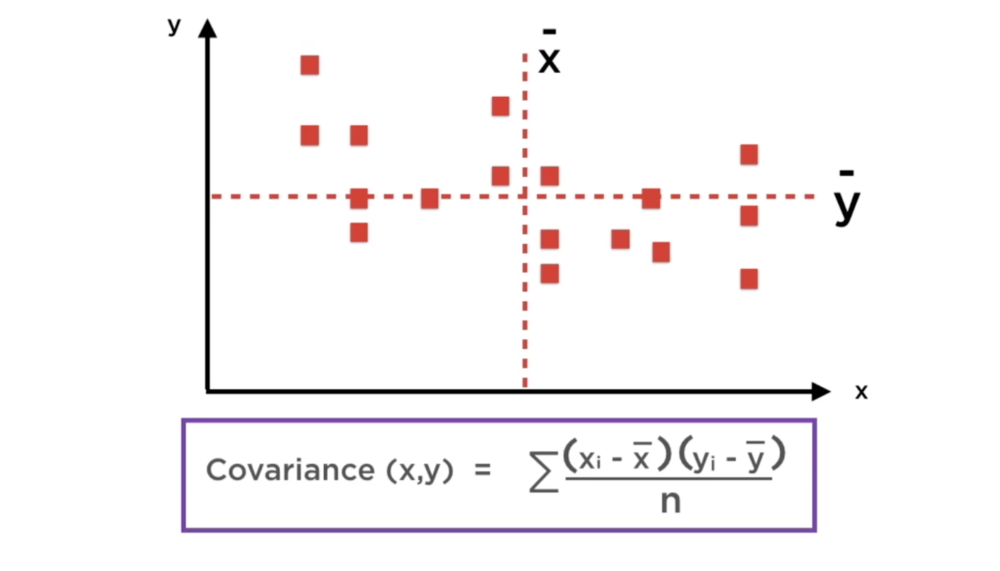
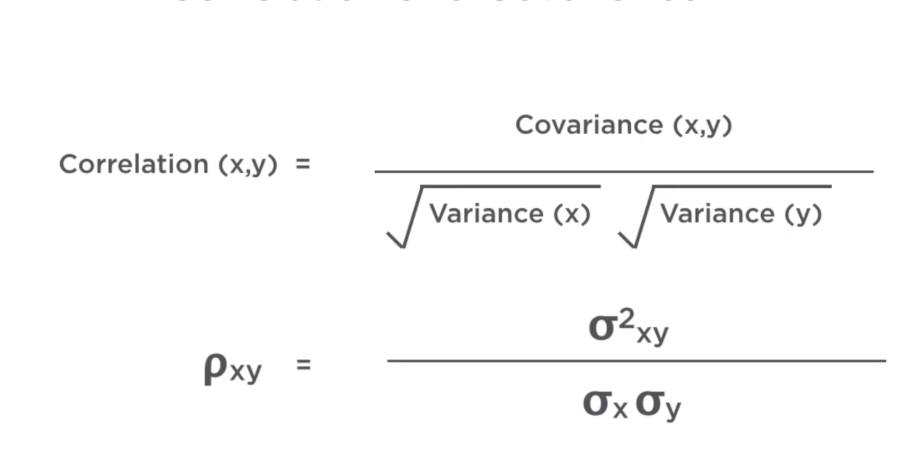
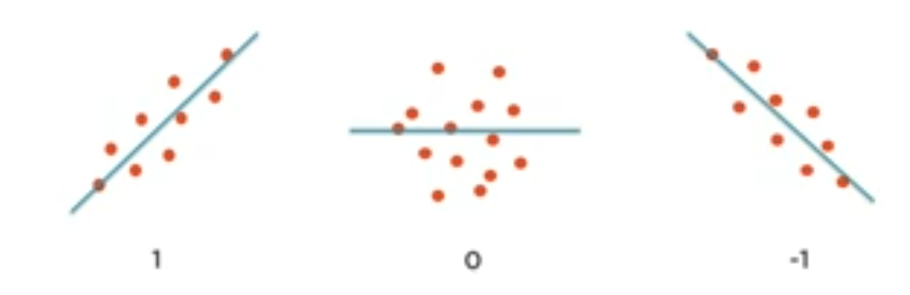
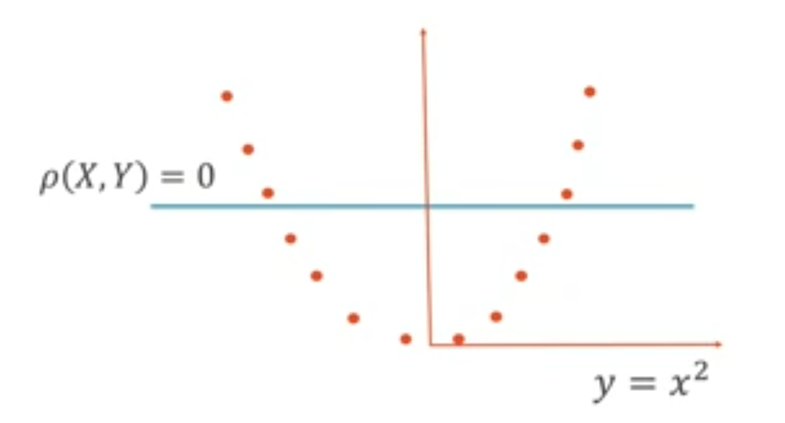
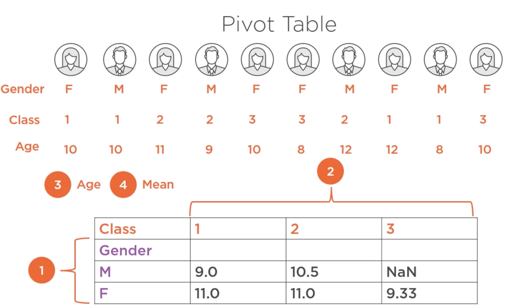

Análisis exploratorio de datos multivariable
Contents
Análisis exploratorio de datos multivariable¶
Objetivo¶
Identificar las correlaciones que existen en las variables para así poder formular hipótesis sobre relaciones causa-efecto.
Técnicas de análisis¶
Carga de datos¶
import os
import pandas as pd
import numpy as np
import matplotlib.pyplot as plt
import seaborn as sns
tips = sns.load_dataset('tips')
tips.tail()
---------------------------------------------------------------------------
ModuleNotFoundError Traceback (most recent call last)
Input In [1], in <module>
2 import pandas as pd
3 import numpy as np
----> 4 import matplotlib.pyplot as plt
5 import seaborn as sns
7 tips = sns.load_dataset('tips')
ModuleNotFoundError: No module named 'matplotlib'
Covarianza¶
Mide la relación lineal entre dos variables (si incrementan o decrementan juntas). Una covarianza positiva indica que las variables se mueven en la misma dirección y un covarianza negativa que las variables cambian en direcciones opuestas. Sin embargo, no permite valorar la intensidad de la relación.
{kind=link}
np.cov(tips['total_bill'], tips['tip'])
array([[79.25293861, 8.32350163],
[ 8.32350163, 1.91445464]])
tips.cov()
| total_bill | tip | size | |
|---|---|---|---|
| total_bill | 79.252939 | 8.323502 | 5.065983 |
| tip | 8.323502 | 1.914455 | 0.643906 |
| size | 5.065983 | 0.643906 | 0.904591 |
Coeficiente de correlación¶
Al igual que la covarianza mide la dirección pero tambien la intensidad de la relación. Es importante recordar que correlación no implica causalidad
 {kind=link}
{kind=link}
Un coeficiente de correlación igual a cero no necesarimente implica que las variables sean independientes. Dos variables independientes tendrán un coefiente de correlación de cero. Por esta razón, el cálculo del coeficiente de correlación debe ser complementado con la exploración visual de los datos..
Tambien es importante recordar que el índice de correlación sólo indica relaciones lineales entre las variables. Por tanto, no indica las relaciones no lineales que pudieran existir entre las variables. Por ejemplo, en la ecuación y=x^2, las variables tendrán una correlación de 0 a pesar de estar claramente relacionadas.
{kind=link}
np.corrcoef(tips['total_bill'], tips['tip'])
array([[1. , 0.67573411],
[0.67573411, 1. ]])
tips.corr()
| total_bill | tip | size | |
|---|---|---|---|
| total_bill | 1.000000 | 0.675734 | 0.598315 |
| tip | 0.675734 | 1.000000 | 0.489299 |
| size | 0.598315 | 0.489299 | 1.000000 |
Visualización de la relación entre dos variables¶
tips.plot.scatter(x='total_bill', y='tip', color='c', title='scatter plot : Tip by Total bill', alpha=0.1)
<AxesSubplot:title={'center':'scatter plot : Tip by Total bill'}, xlabel='total_bill', ylabel='tip'>

sns.jointplot(x='total_bill', y='tip', data=tips, color='#F15B2A')
<seaborn.axisgrid.JointGrid at 0x7f151e4395d0>

sns.jointplot(x='total_bill', y='tip', data=tips, color='#F15B2A', kind='kde')
<seaborn.axisgrid.JointGrid at 0x7f151e8c3350>

Variables cualitativas¶
Crosstabs¶
tips.head()
| total_bill | tip | sex | smoker | day | time | size | |
|---|---|---|---|---|---|---|---|
| 0 | 16.99 | 1.01 | Female | No | Sun | Dinner | 2 |
| 1 | 10.34 | 1.66 | Male | No | Sun | Dinner | 3 |
| 2 | 21.01 | 3.50 | Male | No | Sun | Dinner | 3 |
| 3 | 23.68 | 3.31 | Male | No | Sun | Dinner | 2 |
| 4 | 24.59 | 3.61 | Female | No | Sun | Dinner | 4 |
#Conteos de la combinacion de variables nominales
pd.crosstab(tips["smoker"], tips["sex"])
| sex | Male | Female |
|---|---|---|
| smoker | ||
| Yes | 60 | 33 |
| No | 97 | 54 |
pd.crosstab(tips["smoker"], tips["sex"]).plot(kind='bar')
<matplotlib.axes._subplots.AxesSubplot at 0x7f151e27dd50>

Pivot (tablas de contingencia)¶
Es una extensión del crosstab que permite analizar dos variables categóricas y una numérica.
{kind=link}
tips.pivot_table(index='time',columns = 'smoker',values='tip', aggfunc='mean')
| smoker | Yes | No |
|---|---|---|
| time | ||
| Lunch | 2.834348 | 2.673778 |
| Dinner | 3.066000 | 3.126887 |
tips.groupby(['time','smoker'])['tip'].mean()
#type(tips.groupby(['time','smoker'])['tip'].mean())
time smoker
Lunch Yes 2.834348
No 2.673778
Dinner Yes 3.066000
No 3.126887
Name: tip, dtype: float64
tips.groupby(['time','smoker'])['tip'].mean().unstack()
| smoker | Yes | No |
|---|---|---|
| time | ||
| Lunch | 2.834348 | 2.673778 |
| Dinner | 3.066000 | 3.126887 |
tips.groupby(['time','smoker'])['tip'].mean().unstack().plot.bar()
<matplotlib.axes._subplots.AxesSubplot at 0x7f151e6bda90>